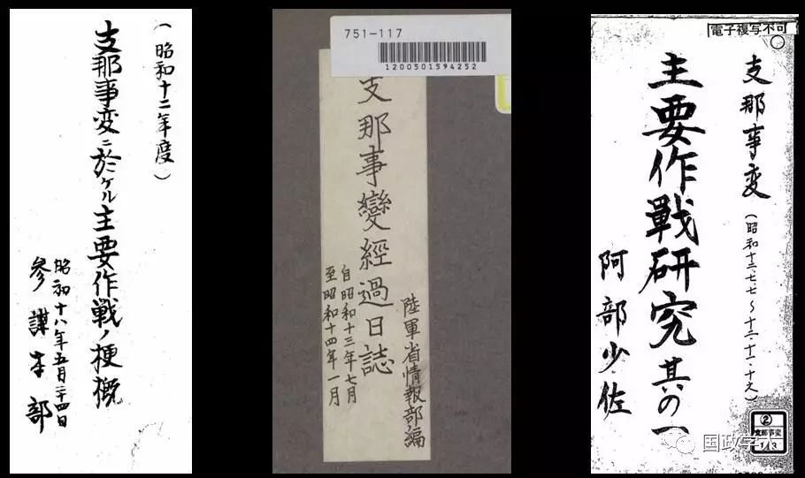
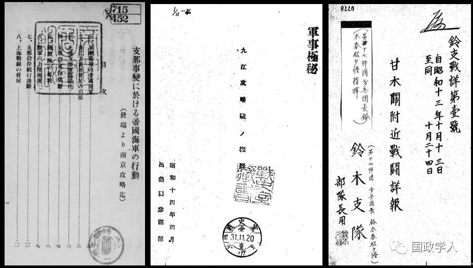
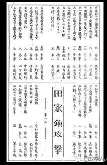
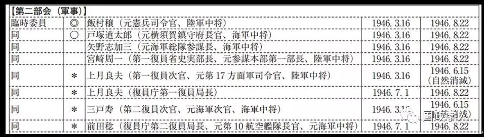
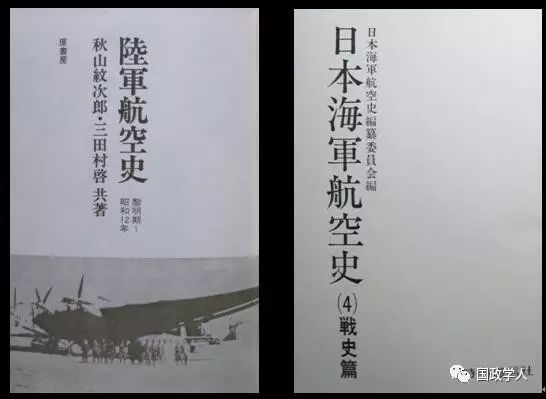
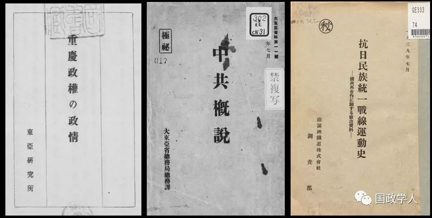
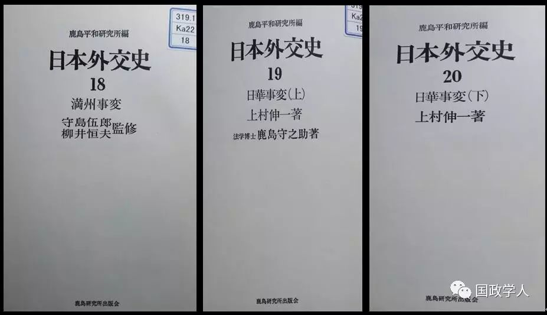
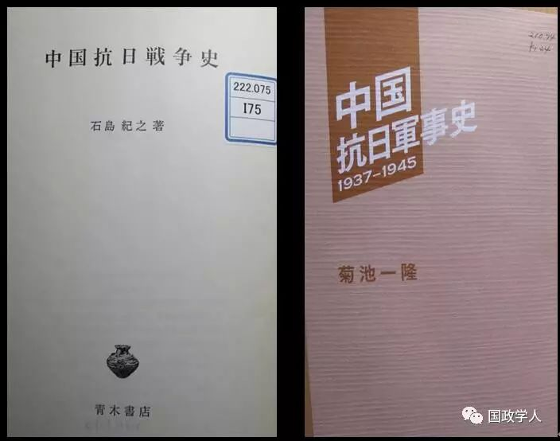

收录于合集

日本学界研究中日战争史的大致脉络
日本是长期侵华战争的发动者、实行者，故对日本学界的相关研究，我们有必要高度关注。日本学界研究中日战争的脉络，从总体上说，可以从旧军人及外交官、旗帜鲜明反对日本侵华的学者及以实证手法反映特定史观的学者这几个方面来梳理。
在日本，当中日战争还在进行之时，从史的角度（当然也直接涉及现实）进行研究就已经开始了。那时，这基本上是由日本军方、政府相关机构等来做的，就动机来说，有服务于日本把握各方面情况、总结经验教训、制定有效政策以利于赢得战争的意图，有时还用于宣传，这是毋庸置疑的。
日本旧军人的研究
在战前，日本军方的相关研究，是以陆海军参谋机关为主体来做的，其研究自然也主要是取军事史角度。所谓参谋机关，既有最高层的，也有各部队的，做研究的人员大多直接参与了日军不同层次对华作战的策划，在此过程中手头积存了大量情报、作战计划、命令、战中文电、各方面战况报告，以及他们作为参谋人员所作的记录、记述等。根据日军制度，他们每战后要写战斗报告，具体叙述过程，作出总结，在高层，每年都有对作战情况的概述。


此外，值得注意的是，当时日军各部队还编印“实话”之类，内容主要是军事行动中基层部队的具体情况，多为事后回忆，特点是日军士兵描述军事行动及其个人经历、感受，都是经过严格审查的，不可能有日军上层认为违碍的内容，但还是可以反映日军高层战史叙述中所缺乏的不少细节。

日本战败之后，一个十分突出现象是，日本一些旧军人并没有改变过去拥护对外侵略的立场，其表现之一，就是一些担任过参谋之类军职、手里还留着不少并且又搜集了一些以往战史资料的人，通过编撰战史来显示其坚持这种立场。
日本防卫省外交防卫课的富田圭一郎，在《レファレンス》2013年1月号发表的《敗戦直後の戦争調査会》一文，介绍了一些情况，发人深思。文中说，1945年10月至1946年5月，币原喜重郎内阁期间，设立了“大东亚战争调查会”，但到1946年1月，因盟军最高司令官下令禁止在公文中使用“大东亚战争”之语，又改名为“战争调查会”，该会在1946年9月30日解散。在此之前，1945年10月5日，日本海军方面的人就提出有必要编纂《大东亚战争志》，15日，日本内阁制订了《关于编纂第二次世界战史问题》文件。由于当时舆论要求查明、追究战争责任，10月30日，内阁又决定调查战败原因及实情。币原喜重郎在1946年2月担任战争调查会的总裁，一直到该会解散为止。该会设有委员与临时委员，由政治外交、军事、财政经济、思想文化、科学技术5个部会组成，有6名旧军人任临时委员，在第二部会担任军事调查。而所谓军事调查中，九一八事变、七七事变的原因过程、太平洋战争等战史问题，都包含在内。

这些旧军人主要担任战争过程调查，编纂战史，致力于研究战败原因，但表示并不明言战争观，编纂战史对战争性质不作价值判断，而只记述战争历程，让以往的当事军人与临时委员一同参与，不坠入结果论。
但这个战争调查会的设立，引起苏、英质疑，美国称为了避免对于调查会目的的误解而要日本政府自动解散。日本政府只得于1946年8月14日决定解散该会，停止有关军事的调查，将原先任用的旧军人全部免去。
尽管如此，这些旧军人的立场也并没有改变。曾在东条英机手下担任陆军大臣秘书官、参谋本部作战课长的服部卓四郎，在日本战败后担任第一复员厅史实调查部长，被美国方面看好，协助麦克阿瑟主导的太平洋战争史编纂，1948年底又受美国主导的驻日盟军总司令部的战史调查部之托，研究日本重整军备问题，找来一些战争时期有大佐、中佐军衔并在参谋本部、陆军省担任要职的旧军人，成立所谓“服部机关”。他们利用所掌握的各种战史资料，编纂了《大东亚战争全史》4卷（另有一册附图），于1953年出版。
服部卓四郎在该书自序中称：“战争是人类史的悲剧，但有时也可说是宿命。”他深感悲痛的是，日本战殁者约有250万、战争中负伤者有15万以及数倍于这些数字的遗族数量。而对于日本的对外侵略战争残害无数别国军民，他并无只字言及，对日本战争罪责，更是毫无抨击、悔罪之意，却宣称“一贯致力于以公正客观态度探究史实真相”，“为揭示我陆海军奋战实情不惜用去很多篇幅”。而此书扉页，也公然印着“谨将此书献给殉国250万英灵”这样的话。当然，服部卓四郎对该书所用史料的说明，还是值得注意的。他说：在日本战败时销毁大量军方文书之余，他们为编纂此书，搜集了“各有心之人”自己保留的御前会议、大本营政府联络会议、最高战争指导会议的正式记录、机密作战日志、军方一些当事人或能接触各种机密者的口述笔记等。
服部卓四郎等编纂《大东亚战争全史》，完全可以说是既往日本军方编纂战史的延续，书中反映的历史认识，也与对外侵略战争时期的日本军方没有实质区别，甚至连“支那事变”之类辱华色彩浓厚、“大东亚战争”这样的军国主义标志性的用语，都还一仍其旧。
类似《大东亚战争全史》、由日本旧军人写的战史类的书，还有九一八事变、七七事变时都任职于参谋本部、太平洋战争中上过战场的大佐堀场一雄1948年所撰《支那事变战争指导史》（初版于1962年）；从七七事变爆发到太平洋战争爆发期间分别在日本的支那派遣军总司令部、参谋本部担任作战参谋的井本熊男所撰《支那事变作战日志》及有关太平洋战争的书（初版于1978年）等。
直到当下还有很大影响、我国学界也较早有所了解的防卫研究所战史室多年编纂的《战史丛书》，与日本军方战史编纂，有直接的渊源关系。《战史丛书》中涉及中日战争的卷帙，较之于上述由日本旧军人直接编撰的战史，辱华、军国主义色彩浓厚的词语基本上是不用了，但所反映的历史认识，仍很难说有多少质的差异。并且，以往旧军人编撰战史，对所用的不少史料，没有或不愿交待来源出处，以正规学术研究的标准来衡量，不合规范；对相关中文史料，也基本上不做正规引述。这样的缺陷，《战史丛书》也都沿袭下来。我国学界在一段时间内，限于种种条件，很难接触到有关中日战争的原始日文档案等，因而相关论著对于日方史料的征引，往往集中于《战史丛书》相关卷帙的叙述。但是，近年来，日本方面公布官方所藏原始战史资料的力度很大，中国学者搜集日本原始史料的便利也今非昔比，随之《战史丛书》作为日方史料的价值明显降低了，这是我国相关研究者应该了解的情况。
关于日本旧军人编撰的涉及中日战争的战史，有必要提及两本书：一是由原日本陆军航空总监部课长秋山纹次郎等撰写的《陸軍航空史》（原书房1981年版），二是由日本海军航空史编纂委员会组织原海军航空将校山本亲雄、安延多计夫、岛田航一编撰的《日本海軍航空史》（戦史篇）。这两本由日本航空方面旧军人编撰的书（尤其是后者），主要基于日本防卫研究所的相关档案，也利用战前日本出版的同类书籍，分别叙述日本在中日战争中对陆海军空中武力的具体运用情况。从我国的中日战争研究（也包括台湾方面在内）看，对于日本当时如何运用空中武力，虽不无涉及，但似未见充分运用日文档案史料作的专深研究，这是研究中的一大薄弱环节，而由日本旧军人编撰的上述相关战史，对我们了解线索、搜集史料，还是有用的。

此外，日本在战后还出版了一些日军将领的回忆、日记等，其中包括大家都知道的冈村宁次回忆录、畑俊六日记、伊东政喜日记等。这些书，基本上属于资料性质，如果说也有研究性的内容，那主要是出自整理者笔下。
日本旧官僚的研究
近代以来，日本包括政府机构在内的各个方面，紧盯中国社会，多方调查情况、搜集资料、刺探情报，做各种研究，可谓传统。即使在中日战争时期，这在日本也没中断，只是所谓研究进一步被军国主义主导、更露骨地服务于日本对华战争而已。从我了解的情况看，中日战争时期日本涉及中国现状的研究中，最突出的是其政府各机构的情报部门及其外围团体，外务省及驻华使领机构、1942年成立的大东亚省、外事警察部门、满铁的情报机构等，都有大量涉及战时中国社会各方面、围绕中日的国际关系等问题的研究。对于国民党与国民政府的内外政策、政权基础、军队状况多有述论，自不必说；而特别值得注意的是，对当时日本最为敌视的中国共产党及其政权、军队、根据地，抗日民族统一战线等，也分别作了不少研究，毛泽东在抗战时期公开发表的主要论著《论持久战》、《论新阶段》、《新民主主义论》、《整顿党的作风》、《反对党八股》，都被全文翻译。

日本战败后，币原内阁成立战争调查会，包括币原本人在内的一些战前政治家成为其成员，而战前日本内务、司法、外务、商务、农林、大藏、运输、递信、文部、厚生等省次官及其他一些官僚，也成为临时委员。尽管该会不久就解散了，但一些日本旧官僚还是要坚持将他们对中日战争等的叙述与看法写书留存下来，于是就有了在我国学界广为人知的重光葵的回忆录等。我在此还想提及的是：战前是日本外交官、战后当过议员而又是有名的企业家的鹿岛守之助，对于从事近代日本外交研究劲头很高，成立了研究所，策划编撰出版38卷的《日本外交史》，这套丛书的最大特点，就是主要由战前日本外务省官员担纲。其中，主要涉及中国的第17卷至第20卷（时段为民国初年至中日战争），便分别由战前曾派驻中国等国的外交官上村伸一、守岛伍郎、柳井恒夫编撰。

旗帜鲜明抨击日本侵华的学者的研究
1.井上清等马克思主义史学家对日本军国主义的批判与清算
2.藤原彰、江口圭一、笠原十九司等对日本侵华各种罪恶的揭露
3.石岛纪之、菊池一隆等侧重于中国抗日战争的研究

以实证手法反映特定史观的学者的研究
这类研究最为多见，所涉及的领域也很宽泛，共同点在于不大认可乃至于完全否认日本侵华战争是日本军国主义对华侵略、与列强争霸、日本社会矛盾的必然产物，而通过对各种细节的实证研究，凸显日本社会内部在对华战争问题上的不同意向及其相互抵牾，强调特定因素、偶然性的影响。通过这类研究，对很多史实的探讨的确进一步精细化，但偏好于一些日本内部意向、政策争论，而不大着墨于日本侵华实态、回避追究日本的战争罪责的倾向，也很明显。其中，还有某些日本学者，精心围绕一些细节做文章，借以从学术上否定那些揭露日本侵华罪行的学者，贬斥他们歪曲日本近代历史。
从日本战败以后到现在，日本围绕中日战争史所做的学术研究，上述三种情形是一直都存在的（日本现已没有旧军人、旧官僚做相关研究，但他们的影响仍在），而哪一种情形突出，也并不仅仅是学术研究本身所决定的，与日本国内外环境、社会思潮的变化息息相关。此外，还要看到，新中国成立后，我国学界对于中日战争史的研究及其基本见解，对日本学界有过很大影响。但是在当下，毋庸讳言，这种影响力是减弱了，有待于我们加紧努力。
关于日本的十五年战争之说
我国的中学历史教材，现在已正式采用十四年抗战的提法了。对此，有些学者乃至于社会上一些人士，有不同的议论。这其实并非全新的提法，毛泽东在抗战即将胜利时、党的七大上所作政治报告《论联合政府》中，就明确说过：中国人民的抗日战争，从“九·一八”事变爆发后就开始了。在这个问题上，再了解一下日本学界的十五年战争之说，也是可以开阔眼界的。
日本言论家鹤见俊辅在1956年最早提出十五年战争之说，此说按跨年头的算法，将1931年九一八事变爆发至1945年日本战败投降，算作15年，强调九一八、七七事变、太平洋战争的内在关联性，中国在九一八事变后抵抗从未停止。
据江口圭一说，日本围绕十五年战争之说曾有过争论：不仅有学者存疑，而且日本文部省也长期不许十五年战争字样出现于中学历史教科书的标题中；1993年3月，在日本文部省放行的中学历史教科书《日本史B》中，“十五年战争与日本”才首次用作第12章的题目。
应该充分利用日本大量公布的相关原始档案
亚洲历史资料中心已多年以很大力度公布近代日本军政档案。就中日战争史来说，日本海陆军各层面的原始档案为数甚多；同时，相关外交原始档案也能见到不少；这些档案的获得也很便利。日本防卫研究所《战史丛书》，已不能作为基本史料对待，而只能视为重要参考书了。
我在阅读日本海陆军档案过程中，注意到一个问题：中日战争中，日本在进攻阶段实行相当现代化的海陆空协同作战，这种复杂的战法，在当时的世界上也是全新的。日本的海陆空协同作战，在1932年一·二八事变中就已展开过，八一三事变后在淞沪会战、特别是武汉会战中，又大力实行，使日军在兵力不足、后来地形气候也十分不利的情况下，仍能按期实现预定计划。这个问题，现有战史论著似都未作深入研究。一些论著指出，一·二八事变后中国社会兴起航空救国思潮，国民政府加紧空军建设，但极少述及中方在缺乏工业体系、没有巨舰战机制造能力的条件下，应对日军海陆空协同作战的具体筹划与举措、实战情况及效果如何，专门探讨的论著尚未见到。
日本在对华战争中所用方式、手段、经验，与其后来打太平洋战争的关联如何，也值得进一步研究。讲中日战争与二战的关系，这似乎可以作为一个着眼点。
作者系武汉大学历史学院教授
来源：中国社会科学网
编辑：晞哲
扩展链接
期刊分享 | 国际关系相关专业所有核心期刊免费获取（最新pdf版）
声 明
国政学人微信公众平台系非盈利学术平台。建立初衷是方便广大学人进行学术研究，促进学术的传播和交流，不做任何商业用途。如有任何权利问题，请直接与我们联系。